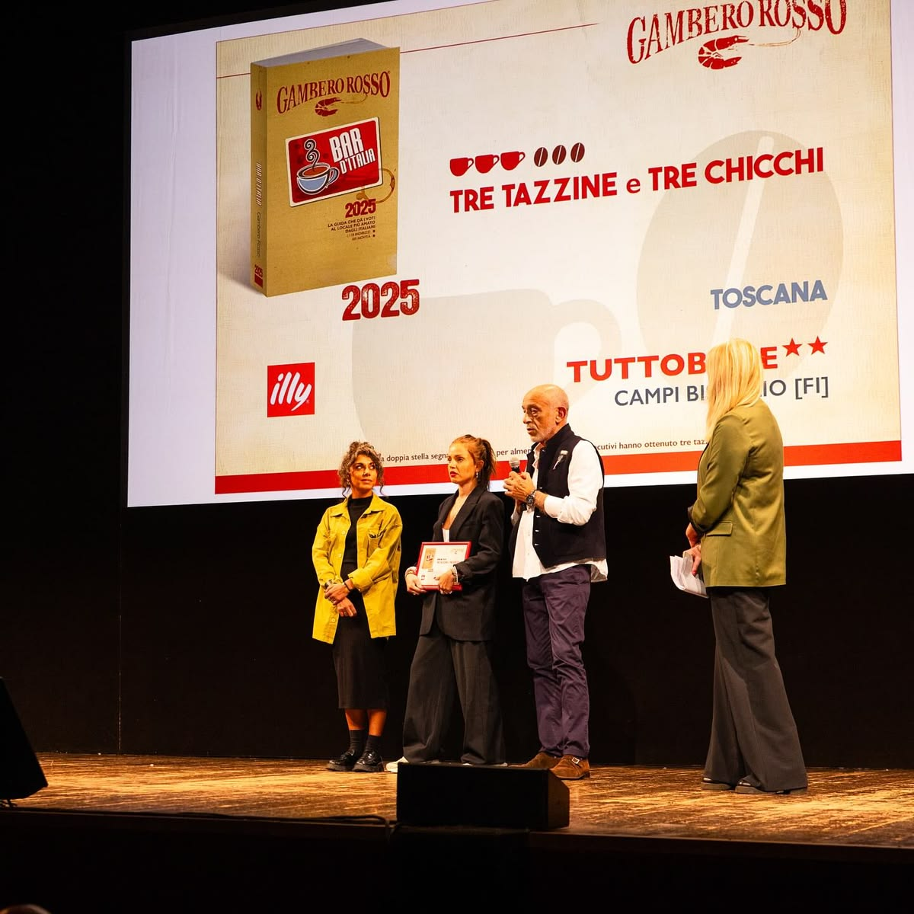

Mentions & Awards
Tre Tazzine e Tre Chicchi: the pinnacle of the Bar d'Italia guide — the "Michelin star" of bars. And the double star ★★, reserved for those who remain at the top for over twenty consecutive years.
Read the article →Best pastry shop in Firenze and surrounding areas: 49 points from the master pastry chefs, winning the golden hat thanks to attention to detail and balanced flavours.
Read the article →Special mention from the jury at the 2013 "Bar of the Year" award, «for the right mediation between high quality and large numbers».
Read the article →Cited among "the 15 places to drink the best coffee ever": leavened products, cremini, bedside rugs and other delights.
Courier Cook →Reported by the prestigious international guide Falstaff among the pastry shops and cafes not to be missed.
See the tab →Over 3,400 reviews on Google and almost 500 on Tripadvisor: «top of the range», «amazing pastry shop». Travellers' Choice and no. 1 of Campi Bisenzio coffee shops.
Read reviews →
